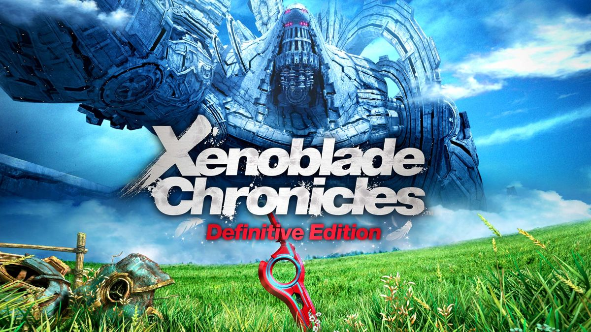
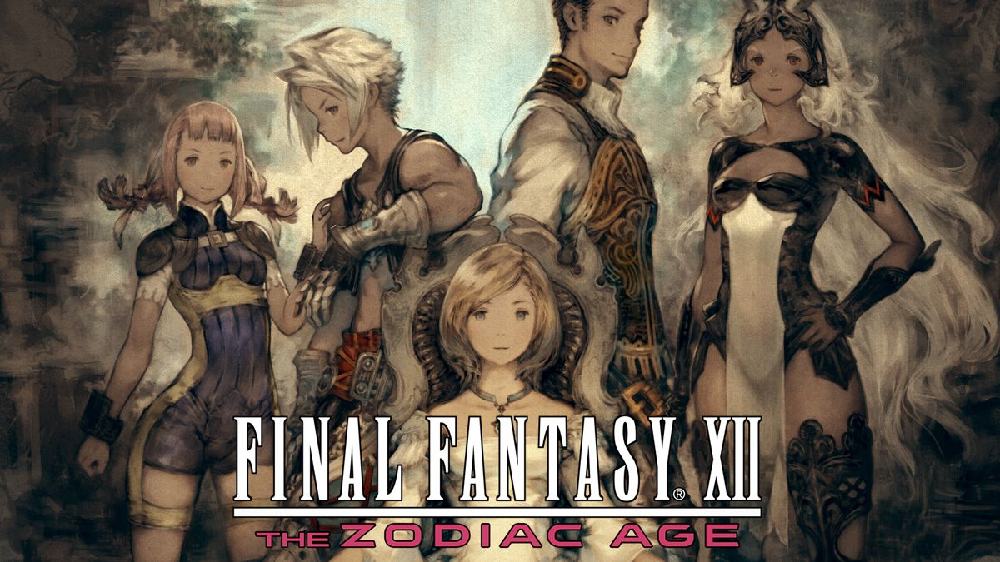
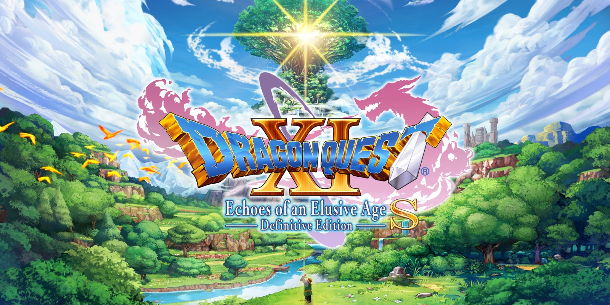
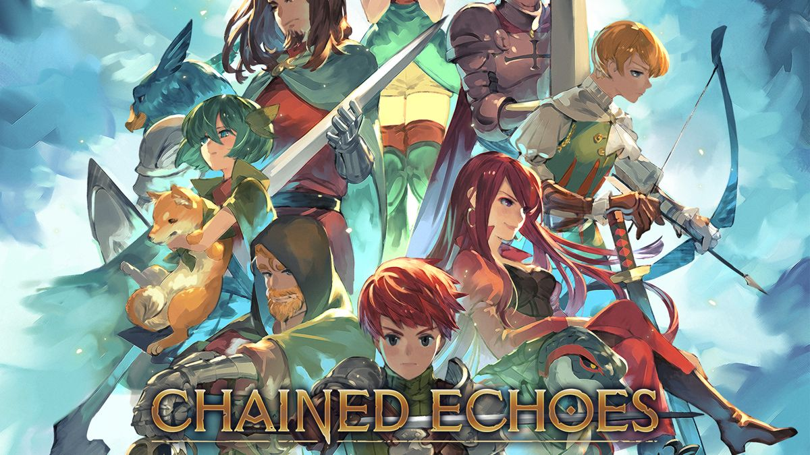
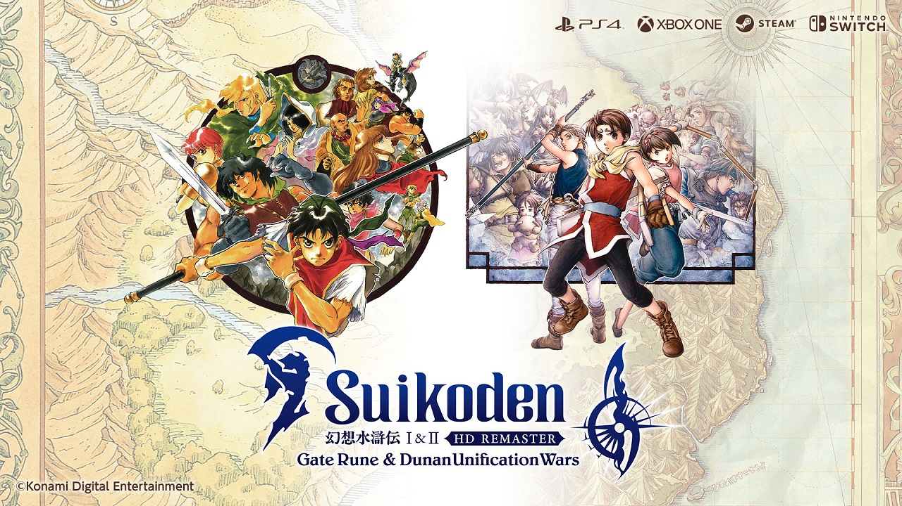

This is a list of the next 5 JRPGs I plan to play on the Nintendo Switch. The order is not a ranking, but just a personal playlist.
The Playlist
Xenoblade Chronicles: Definitive Edition

The Monado sword rests in the field as one of the titanic beings towers over the horizon, symbolizing the clash of man and machine.
Join the fight between man and machine in the definitive edition of this critically-acclaimed RPG. Discover the origins of Shulk as he and his companions clash against a seemingly-unstoppable mechanical menace. Wield a future-seeing blade, chain together attacks, and carefully position your party members in strategic, real-time combat as you journey across a massive world.

The main heroes of Ivalice stand united, ready to challenge fate in a world torn by war and empire.
Enter an era of war within the world of Ivalice. The small kingdom of Dalmasca, conquered by the Archadian Empire, is left in ruin and uncertainty. Princess Ashe, the one and only heir to the throne, devotes herself to the resistance to liberate her country. Vaan, a young man who lost his family in the war, dreams of flying freely in the skies. In a fight for freedom and fallen royalty, join these unlikely allies and their companions as they embark on a heroic adventure to free their homeland.
Dragon Quest XI S: Echoes of an Elusive Age – Definitive Edition

A glowing tree floats above a lush world, setting the stage for the Luminary’s journey to uncover his destiny.
You are the Luminary, a young man who is the reincarnation of a legendary hero. Hunted by a relentless king, you'll embark on a quest to unravel the mystery of your fate with a charismatic cast of adventurers. This Definitive Edition includes the acclaimed base game plus new character-specific stories, the ability to switch between 3D and 2D graphical modes, a fully orchestrated soundtrack, and more.

A diverse party of warriors and mages stands ready for battle in a world where magic and machines intertwine.
Take up your sword, channel your magic or board your Mech. Chained Echoes is a 16-bit style RPG set in a fantasy world where dragons are as common as piloted mechanical suits. Follow a group of heroes as they explore a land filled to the brim with charming characters, fantastic landscapes and vicious foes. Can you bring peace to a continent where war has been waged for generations and betrayal lurks around every corner?

Two generations of heroes rise against empires and betrayal in this HD revival of beloved JRPGs.
A hero's destiny is written in the Stars. The legendary Konami JRPGs Suikoden I and Suikoden II have now been remastered in HD. The story of Suikoden I follows a hero turned fugitive as he gathers the 108 Stars of Destiny to revolt against a corrupt empire. The story of Suikoden II takes place three years later, following a new hero through the Dunan Unification War, a tale of friendship and betrayal.